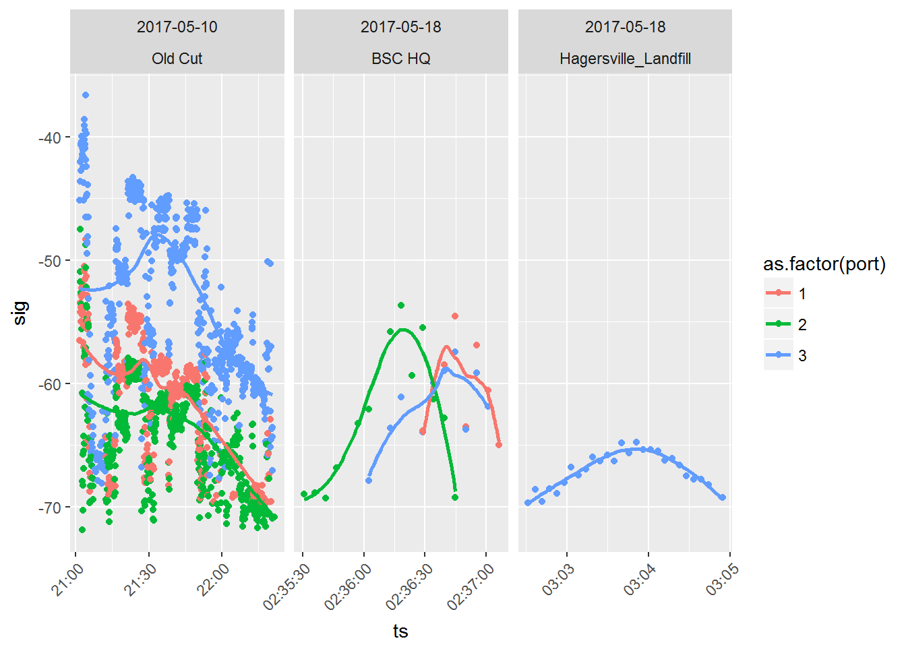

5 Data Cleaning
There are three sources of ‘error’ that can result in tag detections appearing in your database that are incorrect.
First, random radio noise (‘static’) can be detected and interpreted to be the transmission of a tag. These are called ‘false positives’.
Second, despite our best efforts to avoid it, duplicate tags are sometimes transmitting in the network at the same time. When two tags are deployed at the same time that have the same ID code, burst interval, and nominal transmit frequency, it results in situations where the detections may belong to either tag. If that happens, we must rely on contextual information to separate them (if we can). We term these ‘Ambiguous tags’. Third, a tag can appear to be present when two tags are transmitting at the same time that by chance produce a signal that looks like a third tag that is not in fact present. Such tags are most common at roosting sites or breeding colonies, where many tags are transmitting simultaneously. We term these ‘Aliased tags’. We do not deal explicitly with Aliased tags in this chapter; we are working on a way to globally identify them and eliminate them from the data. We mention them here because you may encounter situations with what appear to be highly plausible detections that don’t make biological sense. Please contact us if you think you have some of these Aliased tag detections in your database.
Here we provide example workflows to deal with ‘false positives’ and ‘ambiguous tags’. We start by working with false positives, before exploring the ambiguous tags.
5.1 False Positives
Run length (runLen): A run is a group of consecutive detections of a tag detected on a single antenna at a single receiver. In general, a detection with a run length of 2 (i.e. 2 bursts) has a high probability of being a false positive detection. With the exception of a few ‘quiet’ stations with little noise, we generally recommend that you filter out all detections with a run length of 2. However, because you will likely lose some true detections in the process, we also recommend that after a full analysis of your data, you return to these detections and examine them individually, to determine (usually contextually) if they can be considered real.
Standard deviation of frequency offset (freqsd): Standard deviation of frequency offset among pulses in a burst may provide some information about false positive detections. These data are collected by SensorGnome receivers only. We do not have specific recommendations here regarding the use of this statistic at the present time, but are exploring its potential use. If you choose to use freqsd to filter data, we suggest that you carefully examine the detections you are removing. We nonetheless recommend that filters be applied to entire runs, rather than individual detections within each run.
The goal of this chapter is to provide you with the tools you need to check your data for false detections, and create a filter to remove them from your data.
We do so using the following steps:
Run a preliminary filter to remove all detections with runLen of 2.
Determine how many of your tags may be ambiguous detections.
Provide a workflow for examining individual tags, and determining if runs in those tags are errors.
Create a custom data filter that is associated with your Motus login credentials.
5.2 Load required packages
Follow the instructions in Chapter 2 to install the following packages before loading, if they are not already installed.
Sys.setenv(tz="GMT")
library(devtools)
library(motus)
library(tidyverse)
library(lubridate)
library(rworldmap) # for mapping5.3 Load detections data
Recall from 3 that when accessing the sample database, you will need to input “motus.sample” in the R console as both username and password when prompted by the tagme() user authentication process. This section assumes you have already completed the initial sample data download.
When accessing the alltags table, we remove some unecessary variables to reduce the overall size of the data set and make it easier to work with. We then create receiver latitude and longitude variables based on the coordinates recorded by the receiver GPS, and where those are not available, infilled with coordinates from the receiver deployment metadata. We use the collect() and as.data.frame() statements to transform the dataframe into a ‘flat’ file, and then transform all time stamp variables from seconds since January 1 1970 to datetime (POSIXct) format. Finally, we create ‘receiver names’ from the latitude and longitude variables for those receivers in the database that do not have these values filled in.
proj.num <- 176
## Load detection data, select variables, create latitude variables, and transform to flat file.
## We also fix up some sites that are missing receiver deployment data, or do not have names
## As more users explore (and fix!) their metadata, these missing values should begin to disappear.
sql.motus <- tagme(proj.num, update = TRUE, dir = "./data/")
tbl.alltags <- tbl(sql.motus, "alltags")
df.alltags <- tbl.alltags %>%
mutate(recvLat = if_else((is.na(gpsLat)|gpsLat == 0), recvDeployLat, gpsLat),
recvLon = if_else((is.na(gpsLon)|gpsLon == 0), recvDeployLon, gpsLon),
recvAlt = if_else(is.na(gpsAlt), recvDeployAlt, gpsAlt)) %>%
select(-noise, -slop, -burstSlop, -done, -bootnum, -mfgID, -codeSet, -mfg, -nomFreq,
-markerNumber, -markerType, -tagDeployComments, -fullID, -deviceID,
-recvDeployLat, -recvDeployLon, -recvDeployAlt, -speciesGroup, -gpsLat,
-gpsLon, - recvAlt, - recvSiteName) %>%
collect() %>%
as.data.frame() %>%
mutate(ts = as_datetime(ts), # work with dates AFTER transforming to flat file
tagDeployStart = as_datetime(tagDeployStart),
tagDeployEnd = as_datetime(tagDeployEnd),
recvLat = plyr::round_any(recvLat, 0.05),
recvLon = plyr::round_any(recvLon, 0.05),
recvDeployName = if_else(is.na(recvDeployName),
paste(recvLat, recvLon, sep=":"), recvDeployName))
## Note that in the select statement, you can just select the variables you need
## e.g.: select(runID, ts, sig, freqsd, motusTagID, ambigID, runLen, tagProjID,
## tagDeployStart, tagDeployEnd, etc.)5.4 Preliminary data checks
Prior to filtering the data, we do a few summaries and plots of the data.
1. Summarize the detections of your tags
First, determine which project tags have detections, and determine how many are of run length 2. There are several reasons why deployed tags might not be detected, including:
The tag was not properly activated on deployment. To avoid this, always check that a tag is active using a hand-held receiver before attaching the tag to your study animal and releasing it.
An animal with a properly activated tag might not have passed within range of a receiving station. Study designs that incorporate strategic placement of receivers to meet project goals can improve the probability of a tag being detected.
Missing or incorrect tag deployment metadata in the Motus database can result in the data processing algorithm not ‘looking’ for your tag at the time the tag was deployed, or at all. Please ensure your tag metadata are entered correctly.
Using the following code, we see there are detections for 18 tags deployed by the sample project, and that many have run lengths of 2:
df.alltags %>%
filter(tagProjID == proj.num) %>% # subset to include only tags registered to project
mutate(rl.gt.2 = runLen == 2) %>%
group_by(motusTagID, rl.gt.2) %>%
tally() %>%
spread(key = rl.gt.2, value=n)## # A tibble: 18 x 3
## # Groups: motusTagID [18]
## motusTagID `FALSE` `TRUE`
## * <int> <int> <int>
## 1 16011 125 2
## 2 16035 454 2
## 3 16036 106 12
## 4 16037 1307 46
## 5 16038 84 78
## 6 16039 1098 28
## 7 16044 289 16
## 8 16047 773 66
## 9 16048 84 14
## 10 16052 133 26
## 11 17357 277 12
## 12 19129 568 720
## 13 22867 5545 222
## 14 22897 34308 488
## 15 22902 2815 108
## 16 22905 25684 326
## 17 23316 5518 216
## 18 23319 22471 288Although some of these may be valid detections, we have found it simpler to just remove them from our analysis, and possibly revisit them at a later stage. Therefore we filter on runLen (> 2) for most subsequent operations. We save these in a block to add to our other filters later.
df.alltags.sub <- filter(df.alltags,
runLen > 2)
df.block.0 <- filter(df.alltags,
runLen == 2) %>%
select(motusTagID, runID) %>%
distinct()An initial view of the data is best achieved by plotting. We will show you later how to plot detections on a map, but we prefer a simpler approach first; plotting detections through time by both latitude and longitude. First however, we should simplify the data. If we don’t, we risk trying to plot thousands or millions of points on a plot (which can take a long time). We’ll do this by creating a little function here, since we’ll use this operation again in future steps.
Note that we need to remove about 150 detections, because there is no geographic data associated with the receiver metadata, and so no way to determine the location of those detections. Do a simple check to see if these receivers belong to you, and if so, FIX THE METADATA!
filter(df.alltags.sub, is.na(recvLat)) %>%
select(recvLat, recvLon, recvDeployName, recvDeployID, recv, recvProjID, recvProjName) %>%
distinct()## recvLat recvLon recvDeployName recvDeployID recv recvProjID
## 1 NA NA NP mobile 3813 Lotek-280 176
## 2 NA NA NA:NA NA SG-1415BBBK0382 NA
## 3 NA NA NA:NA NA SG-2814BBBK0547 NA
## recvProjName
## 1 SampleData
## 2 <NA>
## 3 <NA>3. Simplify the data for plotting
## simplify the data by summarizing by the runID.
## if you want to summarize at a finer (or coarser) scale, you can also create other groups.
## The simplest alternative is a rounded timestamp variable; for example by using
## mutate(ts.h = plyr::round_any(ts, 3600) function call.
## Other options are to just use date (e.g date = as_date(ts))
##
fun.getpath <- function(df)
{
df %>%
filter(tagProjID == proj.num, # keep only tags registered to the sample project
!is.na(recvLat) | !(recvLat == 0)) %>%
group_by(motusTagID, runID, recvDeployName, ambigID,
tagDeployLon, tagDeployLat, recvLat, recvLon) %>%
summarize(max.runLen = max(runLen), ts.h = mean(ts)) %>%
arrange(motusTagID, ts.h)
} ## end of function call
df.alltags.path <- fun.getpath(df.alltags.sub)We would initially plot a subset of tags by either latitude or longitude, to get an overview of where there might be issues. Here, to simplify the example, we plot only six tags. We avoid examining the ambiguous tags for now.
p <- ggplot(data = filter(df.alltags.path,
motusTagID %in% c(16011, 16035, 16036, 16037, 16038, 16039)),
aes(ts.h, recvLat))
p + geom_point() +
geom_path() +
facet_wrap(~motusTagID, scales = "free", ncol=2) +
theme(axis.text.x = element_text(angle = 45, vjust = 1, hjust=1)) It is immediately apparent that there may be an issue with some tags showing up around 44 degrees during in the winter, which is possible but unlikely. Let’s examine these tags in more detail by examining the runs in the data frame that are associated with detections in December and January.
It is immediately apparent that there may be an issue with some tags showing up around 44 degrees during in the winter, which is possible but unlikely. Let’s examine these tags in more detail by examining the runs in the data frame that are associated with detections in December and January.
filter(df.alltags.sub, month(ts) %in% c(12, 1),
motusTagID %in% c(16036, 16038, 16039)) %>%
group_by(recvDeployName, month(ts), runLen) %>%
summarize(n = length(ts),
n.tags = length(unique(motusTagID)))## # A tibble: 2 x 5
## # Groups: recvDeployName, month(ts) [?]
## recvDeployName `month(ts)` runLen n n.tags
## <chr> <dbl> <int> <int> <int>
## 1 Sable West Light 2 1.00 3 3 1
## 2 Swallowtail 12.0 3 6 2These detections were at sites around the Canadian Maritimes (Sable Island (NS), Grand Manan (NB)) and were run lengths of 3. These are indicators of likely false positives. We’ll now start a tally of the particular runs involved, so that we can collate them in to a filter later.
If you are interested, you can re-run the code above, but on the full data frame (df.alltags) containing run lengths of 2. You will see that there are additional false positive detections at these sites, that are already eliminated by filtering on runLen > 2. These additional detections provide further evidence that these sites experienced some radio noise during these particular months, resulting in some false positive detections.
You may also be interested more generally in exploring which data have only short run lengths. For example, the following code shows the maximum run length at all sites by month (for those runs with runLen > 2).
df.alltags.sub %>%
mutate(month = month(ts)) %>%
group_by(recvDeployName, month) %>%
summarize(max.rl = max(runLen)) %>%
spread(key=month, value=max.rl)## # A tibble: 49 x 9
## # Groups: recvDeployName [49]
## recvDeployName `1` `3` `4` `5` `8` `9` `10` `12`
## * <chr> <dbl> <dbl> <dbl> <dbl> <dbl> <dbl> <dbl> <dbl>
## 1 Assateague State Park NA NA NA NA NA 6.00 NA NA
## 2 BennettMeadow NA NA NA NA NA NA 11.0 NA
## 3 Binbrook_Conservation_~ NA NA NA 3.00 NA NA NA NA
## 4 BISE NA NA NA NA NA NA 6.00 NA
## 5 Bombay Hook NA NA NA NA NA 53.0 NA NA
## 6 Brier2 NA NA NA NA NA 29.0 NA NA
## 7 BSC HQ NA NA NA 21.0 NA NA NA NA
## 8 BULL NA NA NA NA NA 38.0 5.00 NA
## 9 Comeau (Marshalltown) NA NA NA NA NA 4.00 NA NA
## 10 CONY NA NA NA NA NA NA 7.00 NA
## # ... with 39 more rowsAlternatively, you can produce a list of sites where the maximum run length of detections was never greater than (say) 4, which may sometimes (but not always!) indicate they are simply false detections.
df.alltags.sub %>%
mutate(month = month(ts)) %>%
group_by(recvDeployName, month) %>%
summarize(max.rl = max(runLen)) %>%
filter(max.rl < 5) %>%
spread(key=month, value=max.rl)## # A tibble: 12 x 8
## # Groups: recvDeployName [12]
## recvDeployName `1` `3` `4` `5` `9` `10` `12`
## * <chr> <dbl> <dbl> <dbl> <dbl> <dbl> <dbl> <dbl>
## 1 Binbrook_Conservation_Area NA NA NA 3.00 NA NA NA
## 2 Comeau (Marshalltown) NA NA NA NA 4.00 NA NA
## 3 Koffler NA NA 3.00 NA NA NA NA
## 4 LLICALDAD NA 4.00 NA NA NA NA NA
## 5 MountToby NA NA NA NA NA 3.00 NA
## 6 NP mobile NA NA NA NA 3.00 NA NA
## 7 Old Cut NA NA 4.00 NA NA NA NA
## 8 OSCT NA NA NA NA NA 3.00 NA
## 9 Quempillen (Chile) NA 3.00 NA NA NA NA NA
## 10 Sable West Light 2 3.00 NA NA NA NA NA NA
## 11 Swallowtail NA NA NA NA NA NA 3.00
## 12 TRUS NA NA NA NA NA 4.00 NAIt is impossible here to go through every possible issue that you may encounter. Users are strongly encouraged to explore their data fully, and make reasoned decisions on which detections are unlikely or indeterminate. Through the rest of this chapter we will show you how to collect these runs into a filter, which can then be routinely applied to your data prior to analysis.
To start, we’ll create a data frame that contains the motusTagIDs and runIDs for the false positives identified above. (We’ll use this vector later to create a permanent filter).
We’ll then re-create the plot With the newly filtered data.
## create the filter
df.block.1 <- filter(df.alltags.sub, month(ts) %in% c(12, 1),
motusTagID %in% c(16036, 16038, 16039)) %>%
select(motusTagID, runID) %>%
distinct()
## use the function we created earlier to make a new 'path' data frame for plotting
df.alltags.path <- fun.getpath(filter(df.alltags.sub,
motusTagID %in% c(16011, 16035, 16036, 16037, 16038, 16039),
!(runID %in% df.block.1$runID)))
p <- ggplot(data = df.alltags.path, aes(ts.h, recvLat))
p + geom_point() +
geom_path() +
facet_wrap(~motusTagID, scales = "free", ncol=2) +
theme(axis.text.x = element_text(angle = 45, vjust = 1, hjust=1))
We can see that most of these now appear to make more sense, with tags 16035, 16037 and 16039 having been detected during migration, in what appears to be a reasonable latitudinal progression with time, and the other three tags which were not detected very far away from their deployment location.
The reader is encouraged to explore the rest of the tags within this group, to determine if there are additional false positives.
5.5 Examining ambiguous detections (#ambigs)
Before we go further, we need to check to see if any tags have ambiguous detections. If there are, we will need to explore them, and create additional filters to remove detections from our database.
2. Are any of your tags associated with ambiguous detections?
The clarify() function in the motusClient R package provides a summary of ambiguities in the detections data. Each ambigID refers to a selection of detections that could belong to one or more (up to 6) motusTagIDs, which are listed in the id1 to id6 fields:
clarify(sql.motus)## ambigID numHits id1 fullID1 id2
## 1 -56 5734 22867 SampleData#272.1:5.3@166.38(M.22867) 23316
## 2 -106 279 17021 Selva#172:6.1@166.38(M.17021) 17357
## 3 -114 86 22897 SampleData#303.1:5.3@166.38(M.22897) 24298
## 4 -134 22749 22905 SampleData#301:5.3@166.38(M.22905) 23319
## 5 -171 2074 22778 RBrownAMWO#308:5.3@166.38(M.22778) 22902
## 6 -337 4 10811 Niles#152:6.1@166.38(M.10811) 16011
## fullID2 id3
## 1 SampleData#272:5.3@166.38(M.23316) NA
## 2 SampleData#172:6.1@166.38(M.17357) NA
## 3 NEONICS#303:5.3@166.38(M.24298) NA
## 4 SampleData#301.1:5.3@166.38(M.23319) NA
## 5 SampleData#308.1:5.3@166.38(M.22902) 24303
## 6 SampleData#152:6.1@166.38(M.16011) NA
## fullID3 id4 fullID4 id5 fullID5 id6 fullID6
## 1 <NA> NA <NA> NA <NA> NA <NA>
## 2 <NA> NA <NA> NA <NA> NA <NA>
## 3 <NA> NA <NA> NA <NA> NA <NA>
## 4 <NA> NA <NA> NA <NA> NA <NA>
## 5 NEONICS#308:5.3@166.38(M.24303) NA <NA> NA <NA> NA <NA>
## 6 <NA> NA <NA> NA <NA> NA <NA>
## motusTagID tsStart tsEnd
## 1 NA NA NA
## 2 NA NA NA
## 3 NA NA NA
## 4 NA NA NA
## 5 NA NA NA
## 6 NA NA NAWe can see that there are six tags with ambiguous detections within this data set. Detections associated with five of the six ambigIDs could belong to one of two tags, and detections associated with one ambigID (-171) could belong to one of three tags. The fullID fields list the project names associated with the duplicate tags (e.g., “SampleData”, “Selva”, “Niles”), along with features of the tags (manufacturer tag ID, burst, and transmit frequency).
Let’s get a vector of these, and do some plots to see where there may be issues.
df.ambigTags <- select(df.alltags.sub, ambigID, motusTagID) %>%
filter(!is.na(ambigID)) %>%
distinct() Using our getpath function, we’ll create paths and then plot these detections. We’ll add some information to the plot, showing where (in time) the tags are actually ambiguous. We can then inspect the overall plots (or portions of them) to determine if we can contextually unambiguously assign a detection of an ambiguous tag to a single deployment.
df.alltags.path <- fun.getpath(filter(df.alltags.sub,
motusTagID %in% df.ambigTags$motusTagID,
tagProjID == proj.num)) %>%
mutate(Ambiguous = !(is.na(ambigID))) ## create a boolean variable for ambiguous detections
## to put all ambiguous tags from the same project on the same plot together, we need to create
## a new 'ambig tag' variable we call 'newID.
ambigTags.2 <- filter(df.alltags.sub) %>%
select(ambigID, motusTagID) %>%
filter(!is.na(ambigID)) %>%
distinct() %>%
group_by(ambigID) %>%
summarize(newID = paste(unique(ambigID), toString(motusTagID), sep = ": ")) %>%
left_join(df.ambigTags, by="ambigID")
## and merge that with df.alltags.path
df.alltags.path <- left_join(df.alltags.path, ambigTags.2, by="motusTagID") %>%
arrange(ts.h)
p <- ggplot(data = df.alltags.path, aes(ts.h, recvLat, group = Ambiguous, colour=Ambiguous))
p + geom_point() +
geom_path() +
facet_wrap(~newID, scales = "free", ncol=2) +
theme(axis.text.x = element_text(angle = 45, vjust = 1, hjust=1))
Let’s deal with the easy ones first.
ambiguous tag -337 motusTagID 10811 and 16011:
filter(df.alltags.sub, ambigID == -337) %>%
group_by(motusTagID, tagDeployStart, tagDeployEnd, tagDeployLat, tagDeployLon) %>%
tally()## # A tibble: 2 x 6
## # Groups: motusTagID, tagDeployStart, tagDeployEnd, tagDeployLat [?]
## motusTagID tagDeployStart tagDeployEnd tagDeployLat
## <int> <dttm> <dttm> <dbl>
## 1 10811 2014-10-28 07:00:00 2015-08-03 07:00:00 39.1
## 2 16011 2015-08-02 11:39:59 2015-12-17 11:39:59 51.5
## # ... with 2 more variables: tagDeployLon <dbl>, n <int>We can see from the plot that ambiguous tag -337 is ambiguous only at the beginning of the deployment. We can see from the summary of the tag deployment data, that there were only 4 detections, at the exact latitude of deployment of tag 16011, and just before the non-ambiguous detections of motusTagID 16011. So the issue here is simply that the tail end of the deployment of tag 10811 slightly overlaps with the deployment of tag 16011. We can confidently claim these tags as belonging to motusTagID 16011, and remove the ambiguous detections assigned to the other tag.
We’ll create another data frame to keep track of these runs.
## we want the detections associated with the motusTagID that we want to
## ultimately REMOVE from the data frame
df.block.2 <- filter(df.alltags.sub,
ambigID == -337,
motusTagID == 10811) %>%
select(motusTagID, runID) %>%
distinct()ambiguous tag -134 motusTagID 22905 and 23319:
filter(df.alltags.sub, ambigID == -134) %>%
group_by(motusTagID, tagDeployStart, tagDeployEnd, tagDeployLat, tagDeployLon, month(ts)) %>%
tally()## # A tibble: 4 x 7
## # Groups: motusTagID, tagDeployStart, tagDeployEnd, tagDeployLat,
## # tagDeployLon [?]
## motusTagID tagDeployStart tagDeployEnd tagDeployLat
## <int> <dttm> <dttm> <dbl>
## 1 22905 2016-10-01 16:00:00 2017-06-12 16:00:00 50.2
## 2 22905 2016-10-01 16:00:00 2017-06-12 16:00:00 50.2
## 3 23319 2016-10-15 16:00:00 2017-06-26 16:00:00 50.2
## 4 23319 2016-10-15 16:00:00 2017-06-26 16:00:00 50.2
## # ... with 3 more variables: tagDeployLon <dbl>, `month(ts)` <dbl>,
## # n <int>Here we have a similar situation, but one that is a bit more complex. Two identical tags were deployed at the same location, shortly after one another. Let’s examine a simple plot.
(filter(df.alltags.sub, motusTagID %in% c(22905, 23319), month(ts) == 10) %>%
ggplot(aes(ts, sig, group=recvDeployName, colour=recvDeployName)) +
geom_point() +
xlab("Time") + ylab("Signal strength") +
facet_grid(recvLon~.))
It appears that these are overlapping detections, at two sites in proximity to one another. Additional information from the field researchers may enable us to disentangle them, but it is not clear from the data.
We also examine the non-ambiguous detections of tag -134 that occur in mid-April. These are very early for a Red Knot to be flying through southern Ontario, so should be questioned.
We see from the following filter that there are two separate runs of length 3 each, separated by 3 days. If we inspect the rest of this batch (that is, if we also look at run lengths of 2 from the original data frame) …
filter(df.alltags, batchID == 79646) %>% select(runLen, recvDeployName) %>%
group_by(runLen, recvDeployName) %>%
tally()## # A tibble: 2 x 3
## # Groups: runLen [?]
## runLen recvDeployName n
## <int> <chr> <int>
## 1 2 Koffler 110
## 2 3 Koffler 12… we can see that there are many false positives at this tower around the same time (within the same batch) and so the run lengths of 3 are likely false positives. We will therefore remove all detections of this ambiguous tag from the database.
## we want the detections associated with the motusTagID that we want to
## ultimately REMOVE from the data frame
df.block.3 <- filter(df.alltags.sub,
ambigID == -134) %>%
select(motusTagID, runID) %>%
distinct()ambiguous tag -171 motusTagID 22778, 22902 and 22403:
The ambiguous detections for this tag, which occur in the Great Lakes region, could also belong to motusTagID 22778 from the RBrownAMWO project or motusTagID 24303 from the Neonics project. Let’s take a closer look at these detections.
First, find the deployment dates and locations for each tag.
filter(df.alltags, ambigID == -171) %>%
filter(!is.na(tagDeployStart)) %>%
select(motusTagID, tagProjID, start=tagDeployStart, end=tagDeployEnd,
lat=tagDeployLat, lon=tagDeployLon, species=speciesEN) %>%
distinct() %>%
arrange(start)## motusTagID tagProjID start end lat
## 1 22902 176 2016-10-01 16:00:00 2017-06-12 16:00:00 50.19278
## 2 22778 82 2016-10-21 00:00:00 2018-09-09 00:00:00 45.13535
## 3 24303 146 2017-05-10 22:30:59 2017-06-30 22:30:59 42.60600
## lon species
## 1 -63.74528 Red Knot
## 2 -67.29323 American Woodcock
## 3 -80.46900 White-crowned SparrowAnd plot the detections.
df.ambig.171 <- filter(df.alltags.sub, ambigID == -171)
p <- ggplot(data=df.ambig.171, aes(ts, sig, colour=as.factor(port)))
p + geom_point() + geom_smooth(method="loess", se=FALSE) +
facet_wrap(as_date(ts) ~ recvDeployName, scales = "free_x") +
theme(axis.text.x = element_text(angle = 45, vjust = 1, hjust=1))
We see that there are a large number of detections of this tag on 10 May 2017 at Old Cut (Long Point, Lake Erie, Canada), consistent with a bird ‘hanging around’. These are almost certainly detections of motusTagID ‘24303’ which was deployed at Old Cut on 10 May 2017. Subsequent detections on the 18th of May are near Old Cut (Bird Studies Canada HQ), and then a location to the North of Old Cut (Hagersville, ON). These detections are consistent with a bird departing on migration. Note in particular the pattern in the latter two panels of increasing then decreasing signal strength which indicates a bird is flying through the beam of an antenna.
These detections belong to another project, so we simply remove all detections of that ambiguous tag from our data base.
## we want the detections associated with the motusTagID that we want to
## ultimately REMOVE from the data frame
df.block.4 <- filter(df.alltags.sub,
ambigID == -171) %>%
select(motusTagID, runID) %>%
distinct()ambiguous tag -114 motusTagID 22897 and 24298:
Next we look at the similar ambiguities for ambiguous tag -114.
filter(df.alltags, ambigID == -114) %>%
filter(!is.na(tagDeployStart)) %>%
select(motusTagID, tagProjID, start=tagDeployStart, end=tagDeployEnd,
lat=tagDeployLat, lon=tagDeployLon, species=speciesEN) %>%
distinct() %>%
arrange(start)## motusTagID tagProjID start end lat
## 1 22897 176 2016-10-01 16:00:00 2017-06-12 16:00:00 50.19278
## 2 24298 146 2017-05-10 03:00:00 2017-06-30 03:00:00 42.60690
## lon species
## 1 -63.74528 Red Knot
## 2 -80.46900 White-crowned SparrowWe again subset these and plot them. An initial plot suggested that all of the detections are of a migratory flight, so we construct a somewhat different plot from the one above, that emphasizes this behaviour better.
df.ambig.114 <- filter(df.alltags.sub, ambigID == -114)
p <- ggplot(data=df.ambig.114, aes(ts, sig, colour=paste(recvLat, recvLon, recvDeployName, sep=": ")))
p + geom_point() + scale_colour_discrete(name="Lat/Lon and\nStation Name") +
facet_wrap(~as_date(ts), scales = "free_x")
Notice that the detections are consistent with a migratory departure from the Long Point area (Old Cut Field Station, Lake Erie, Ontario) about a week after the ambiguous tag 24298 was deployed at the same location. This again suggests that these ambiguous detections can be removed from our data.
df.block.5 <- filter(df.alltags.sub,
ambigID == -114) %>%
select(motusTagID, runID) %>%
distinct()ambig -106 motusTagID 17021 and 17357:
These two tags pose an interesting problem. There is only a short period of overlap, between mid Augst 2015 and mid September. One individual is a Grey-cheeked Thrush, tagged in Colombia, the other a White-rumped Sandpiper, associated with the sample project.
filter(df.alltags, ambigID == -106) %>%
filter(!is.na(tagDeployStart)) %>%
select(motusTagID, tagProjID, start=tagDeployStart, end=tagDeployEnd,
lat=tagDeployLat, lon=tagDeployLon, species=speciesEN) %>%
distinct() %>%
arrange(start)## motusTagID tagProjID start end lat
## 1 17021 57 2015-04-30 05:00:00 2015-09-14 05:00:00 11.12265
## 2 17357 176 2015-08-11 07:20:00 2015-12-26 07:20:00 51.48390
## lon species
## 1 -74.08735 Gray-cheeked Thrush
## 2 -80.45000 White-rumped SandpiperWe plot the ambiguous detections to examine the period of overlap.
df.ambig.106 <- filter(df.alltags.sub, ambigID == -106)
p <- ggplot(data=df.ambig.106, aes(ts, sig, colour=paste(recvLat, recvLon, recvDeployName, sep=": ")))
p + geom_point() + scale_colour_discrete(name="Lat/Lon and\nStation Name") +
facet_wrap(~as_date(ts), scales = "free_x")
Both sets of detections are long run lengths, and look valid (increasing then decreasing signal strength). They are about a day apart, and so it is possible they represent two different birds, or the departure flight of the white-rumped sandpiper from its staging ground. Let’s use the siteTrans function (in the motus package) to examine the flight from Netitishi to MDR/Seal (in the Gulf of Maine)
df.ambig.106 %>% filter(motusTagID == 17021) %>% ## just pick one of the two ambiguous IDs
siteTrans(latCoord = "recvLat", lonCoord = "recvLon") %>%
ungroup() %>%
filter(rate < 60) %>% ## remove the simultaneous detections from Seal and MDR
mutate(total.time = as.numeric(round(seconds_to_period(tot_ts)))) %>%
select(start=recvDeployName.x, end=recvDeployName.y, date=ts.x, "rate(m/s)" = rate,
dist, total.time = total.time, bearing)## # A tibble: 1 x 7
## start end date `rate(m/s)` dist total.time bearing
## <chr> <chr> <dttm> <dbl> <dbl> <dbl> <dbl>
## 1 Netitis~ MDR 2015-09-02 04:18:42 17.1 1.21e6 70879 128These detections are >1200 km distant from one another, but the flight speed (17 m/s) is consistent with a white-rumped Sandpiper. Given that the Gray-cheeked Thrush tag was near the end of its expected lifetime, we can reasonably claim these detections for our project, and remove the ambiguous detections associated with motusTagID 17021.
df.block.6 <- filter(df.alltags.sub,
ambigID == -106,
motusTagID == 17021) %>%
select(motusTagID, runID) %>%
distinct()ambig -56 motusTagID 22905 and 23319:
These two tags were also both deployed by the same project.
filter(df.alltags, ambigID == -56) %>%
filter(!is.na(tagDeployStart)) %>%
select(motusTagID, tagProjID, start=tagDeployStart, end=tagDeployEnd,
lat=tagDeployLat, lon=tagDeployLon, species=speciesEN) %>%
distinct() %>%
arrange(start)## motusTagID tagProjID start end lat
## 1 22867 176 2016-09-06 15:35:00 2017-05-18 15:35:00 51.79861
## 2 23316 176 2016-10-02 16:00:00 2017-06-13 16:00:00 50.19278
## lon species
## 1 -80.69139 Pectoral Sandpiper
## 2 -63.74528 Red KnotTag 23316 was deployed by the James Bay Shorebird Project (Sample Project) about three weeks after tag 22867, which was deployed from a location far to the west.
df.ambig.56 <- filter(df.alltags.sub, ambigID == -56) %>%
mutate(sig = ifelse(sig > 0, sig * -1, sig))
p <- ggplot(data=df.ambig.56,
aes(recvLon, ts, colour=paste(recvLat, recvLon, recvDeployName, sep=": ")))
p + geom_point() + scale_colour_discrete(name="Lat/Lon and\nStation Name")  We can see from the plot one bird stayed near longitude -65 between its initial deployment, and was present during and after detections of the ambiguous tag far to the west. It is also clear that anything informative occurs between about 9-11 October, so let’s zoom in on that part of the data set.
We can see from the plot one bird stayed near longitude -65 between its initial deployment, and was present during and after detections of the ambiguous tag far to the west. It is also clear that anything informative occurs between about 9-11 October, so let’s zoom in on that part of the data set.
ts.begin <- ymd_hms("2016-10-06 00:00:00")
ts.end <- ymd_hms("2016-10-12 23:00:00")
p <- ggplot(data=filter(df.ambig.56,
ts > ts.begin,
ts < ts.end),
aes(ts, recvLon, colour=paste(recvLat, recvLon, recvDeployName, sep=": ")))
p + geom_point() + scale_colour_discrete(name="Lat/Lon and\nStation Name")  We can see that the tag was detected consistently at Niapiskau and Grand Ile before and after the period when it was also detected to the north and west (at Washkaugou and Piskwamish) and then to the south. We can look at this transition by filtering out the portion of the data not near Niapiskau, and again using the siteTrans function from the motus package.
We can see that the tag was detected consistently at Niapiskau and Grand Ile before and after the period when it was also detected to the north and west (at Washkaugou and Piskwamish) and then to the south. We can look at this transition by filtering out the portion of the data not near Niapiskau, and again using the siteTrans function from the motus package.
df.56.tmp <- filter(df.ambig.56, !(recvLat == 50.2), motusTagID == 22867) ## the other is a duplicate
siteTrans(df.56.tmp, latCoord = "recvLat", lonCoord = "recvLon") %>%
ungroup() %>%
filter(rate < 60) %>% ## get rid of simultaneous detections
mutate(total.time = as.numeric(round(seconds_to_period(tot_ts)))) %>%
select(start=recvDeployName.x, end=recvDeployName.y, date=ts.x, "rate(m/s)" = rate,
dist, total.time = total.time, bearing)## # A tibble: 2 x 7
## start end date `rate(m/s)` dist total.time bearing
## <chr> <chr> <dttm> <dbl> <dbl> <dbl> <dbl>
## 1 Piskwa~ Washk~ 2016-10-09 22:49:59 20.3 7.63e4 3767 137
## 2 Washka~ SHNJ 2016-10-10 00:00:42 24.3 1.27e6 52386 157The bird made a 14.5 hour flight at a rate of 24 m/s, which is plausible. The researchers involved may have other data to support the inference (e.g. an actual sighting of the Red Knot still in Niapiskau after this flight was recorded) but it seems likely that the ambiguous detections can be reasonably divided between the two individuals.
To fix this problem, we need to create two filters … one that excludes ambiguous detections of tag 22867, and one that excludes some detections of 23316. In this instance, we can do this most easily by filtering on motusTagID and recvDeployName.
## tag 23316 was only ever at "Grand-Ile", "Niapiskau", and tag 22867 was never detected
## at those sites. So we exclude all detections not at "Grand-Ile", "Niapiskau" for motusTag
## 23316, and do the opposite for tag 22867.
df.block.7 <- filter(df.alltags.sub,
ambigID == -56,
motusTagID == 23316,
!(recvDeployName %in% c("Grand-Ile", "Niapiskau"))) %>%
select(motusTagID, runID) %>%
distinct()
df.block.8 <- filter(df.alltags.sub,
ambigID == -56,
motusTagID == 22867,
recvDeployName %in% c("Grand-Ile", "Niapiskau")) %>%
select(motusTagID, runID) %>%
distinct()** filtering **
5.6 Filter the data
The Motus R package offers functionalities to create custom filters for your data (see @ref(#appendixC)). The filters can be used to 1) assign probabilities to detections (runs), and 2) filter detections based on those probabilities each time you load your .motus file. For the moment, filters are only saved locally in your .motus database. A future release of the motus packages should allow you to save your filters to the Motus server, as well, as access public filters created by the Motus team or other Motus users. A filter is created, populated, and applied in the following steps:
- use the ‘createRunsFilter’ function to create (but not populate) a filter, here named ‘filtAmbigFalsePos’.
Generate a dataframe which includes the motusTagID and runID of detections you want to filter; assign a probability to those detections. In this case, because we want to exclude the data we are filtering, we assign a probability of 0 to all detections we consider to be false positives.
Use the ‘writeRunsFilter’ function to write the dataframe to the filter. Using the delete = TRUE option will remove all records previously written to the same filter, if you created one with the same name earlier.
Use the ‘applyRunsFilter’ function to output a flat file of the alltags dataframe with probabilities assigned to each detection. Detections that are not included in the filter will be automatically assigned a probability of 1. Note that to also filter the data by a given probability, you must use the ‘p.min =’ statement. In this case, we use p.min = 0.1, which drops all detections with a probability less than that value. All detections that are not in your filter are assigned the p.default value (1.0).
# create a new filter with name filtAmbigFalsePos
filterID = createRunsFilter(sql.motus, "filtAmbigFalsePos")
# combine our df.block data frames into a single dataframe, and add probability = 0 for filtered records.
df.block.all <- bind_rows(df.block.0, df.block.1, df.block.2, df.block.3,
df.block.4, df.block.5, df.block.6, df.block.7, df.block.8) %>%
mutate(probability = 0)
# write the filter to the .motus database
writeRunsFilter(sql.motus, "filtAmbigFalsePos", df = df.block.all, delete=TRUE)
# obtain a table object where the filtered records have been removed
tbl.alltags.sub = applyRunsFilter(sql.motus, "filtAmbigFalsePos", p.min=0.1, p.default=1.0)In the next chapter, we will be able to use the filtered table to start exploring the data.